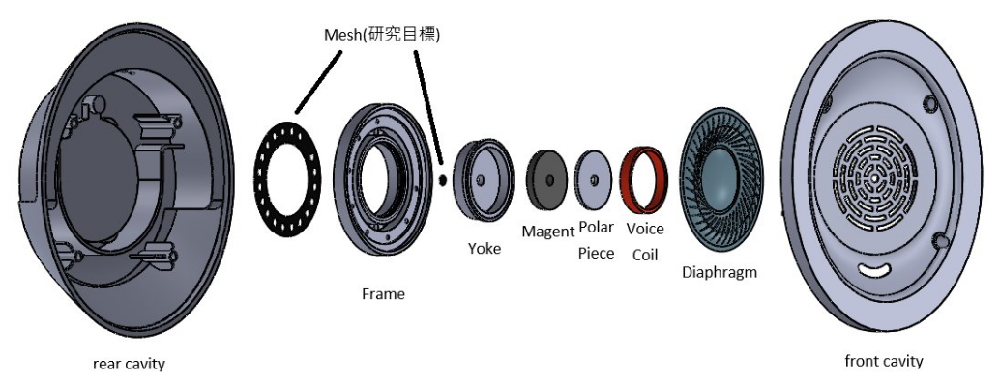

導入深度學習建構電聲產品通氣材料比流阻特性之孔隙率計算模型
Constructing a Porosity Calculation Model for Specific Flow Resistance Characteristics of Ventilation Materials in Electroacoustic Products Using Deep Learning
精密系統設計學士學位學程 & 人工智慧技術與應用學士學位學程
專題組別：第十組 指導教授：劉育成 教授、周永振 教授
專題組長：莊筑雅 專題成員：黃宣禕、楊翔順、陳柏淞
耳機通氣材料說明
耳機通氣材料俗稱調音紙，用於調節聲音響應與氣壓平衡，常見材料包括網布、不織布，可提升低頻表現、減少悶塞感並保護單體防塵防水，其設計需考量開孔率、孔徑與空氣阻抗，以兼顧音質與結構耐用性。
耳機示意圖

Headphone model (Razer Kraken V3 X)
參數
數值
頻率範圍
12 Hz~28kHz
阻抗
32Ω
靈敏度
103 dBSPL/mW, 1 kHz
通氣材料樣本
網布型通氣材料
不織布型通氣材料
頻率響應曲線及音響
沒有通氣材料的聲音
有不織布型通氣材料的聲音1
有不織布型通氣材料的聲音2
有網布通氣材料的聲音1
有網布通氣材料的聲音2